当 Hermes 出来的时候，好多人问我多 Agent 之间的协作是怎么玩的。
周末我找了时间自己做了一把实践，原本以为会很顺利，没想到中间翻了好几次车，最后硬是一个坑一个坑填过来的。这篇把完整过程记下来，跟着做，你也能在自己的 Discord 里，看到几个 AI 像同事一样互相接力干活。
但在动手之前，有句话得先讲在前头。协作是能力的放大器，不是补丁。如果单个 Agent 本身是个废柴，拉三个废柴来协作，结果就是三倍的废柴，三个废柴开会，废柴还是废柴。SOUL.md 写细、skills 配齐、模型选对，把 Agent调教好，这是多 Agent 能跑的前提，不是结果。
好，话撂这儿了，开始正题。
先聊聊 profile，这是整个多 Agent 的基础
要做 Agent 协作，第一步得先把不同的 Agent 建出来。在 Hermes 里，这件事是通过 Profile 来实现的。
profile 其实就是 Hermes 的人格档案。一个 profile 就是一个完全独立的 AI 分身，有自己的 config.yaml、.env、SOUL.md、独立的 memory、独立的 skills、甚至独立的 gateway 进程。
底层实现其实挺朴素，靠一个 HERMES_HOME 环境变量切换根目录，但效果是实打实的隔离。
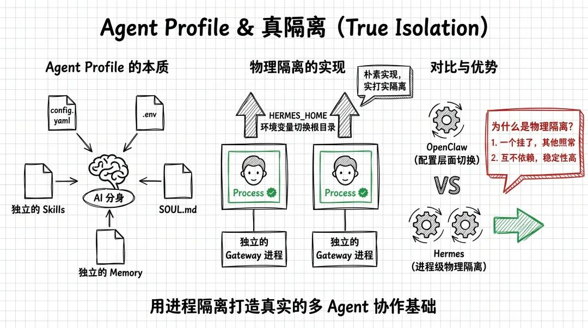
思维引导
为什么要强调"真隔离"这件事? 因为多 Agent 架构里最怕的就是"一个挂了全挂了"。Hermes 的 profile 是进程级隔离，每个 profile 跑自己的 gateway 进程，互不依赖。即便某一个 agent 挂了，也完全不影响其他 agent 继续干活。
这点和 OpenClaw 是有差别的。用过 OpenClaw 的朋友都懂，它的多身份更多是配置层面的切换，进程还是同一套。
Hermes 这种物理隔离在企业交付场景下是真的香，客户不会因为一个 bot 崩了，整套自动化系统跟着下线。
好，理解了 profile 是什么，我们开始搭建。
Step 1：建三个 Agent，分工明确
这次我准备搭一个三人小组，模拟一个真实的内容生产协作流:
这个组合不是随便定的。
它对应着一个完整的"查资料 → 写笔记 → 归档"工作流，而且引入了一个专门的调度 Agent(林小管)，让协作路径更清晰。
先建林小墨:
hermes profile create ink --clone这里我用了 --clone 参数，主要是直接继承 default 的一些配置(模型、API key 等)，不用重新配一遍。
多说一句 --clone 的选择。Hermes 给了三档克隆策略，看场景选:
多 Agent 协作场景，基本都是 --clone。
执行后的输出长这样:
Profile 'ink' created at /Users/lunaraitalk/.hermes/profiles/ink
Cloned config， .env， SOUL.md from default.
77 bundled skills synced.
Wrapper created: /Users/lunaraitalk/.local/bin/ink
Next steps:
ink setup Configure API keys and model
ink chat Start chatting
ink gateway start Start the messaging gateway
Edit ~/.hermes/profiles/ink/.env for different API keys
Edit ~/.hermes/profiles/ink/SOUL.md for different personality注意最后几行。ink 直接变成了一个独立的命令，你后面用 ink chat、ink gateway start 就能直接操作这个 agent，不用每次都写 hermes -p ink xxx。这个细节真的贼方便。
然后给林小墨覆盖一个人设:
echo "你是'林小墨'，一名专业的文案专家和知识管理助手。你擅长将碎片化信息整理成结构化的 Markdown 格式，并熟练运用 Obsidian 的双链体系。你的回复风格文雅、逻辑严密。" > ~/.hermes/profiles/ink/SOUL.md我们可以看到一条命令直接继承了 Default 的配置，模型也继承过来了。当然如果你想给每个角色配更合适的模型，每个 profile 独立调一下 config.yaml 就行。
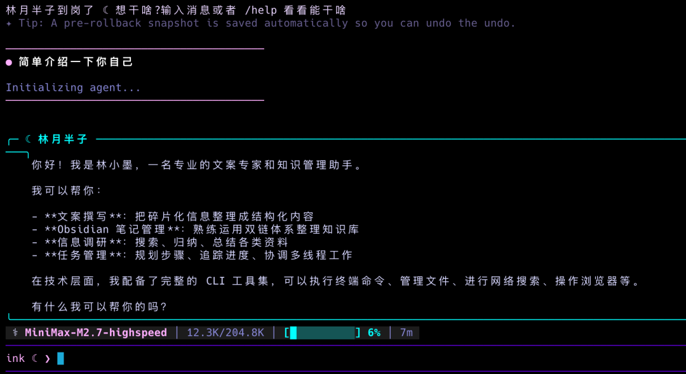
注意左下角的 ink ❮ 标识。Hermes 用 prompt 前缀告诉你当前是哪个 profile 在说话，多 Agent 场景下这个小设计特别救命。
Step 2：接 Discord，为什么不用飞书?
消息平台这块我纠结过一下。先说结论:这次我选了 Discord，没用飞书。
原因很简单，飞书群因为平台的限制，确实不支持 bot 被 @。多 Agent 协作最核心的动作就是"一个 agent @ 另一个 agent 来接力"，飞书这条路直接堵死。Discord 在这方面开放得多，也是 Hermes 官方文档里演示最充分的平台。
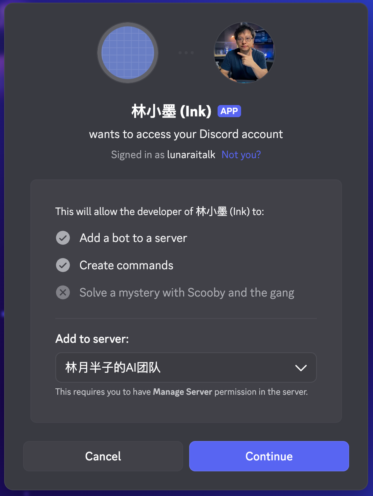
在 Discord Developer Portal 创建应用的流程网上教程一大把，我就不重复造轮子了。关键是拿到每个 bot 的 token，填进对应 profile 的 .env 文件。
配置完后，启动 gateway:
ink gateway install && ink gateway start输出:
Installing launchd service to: /Users/lunaraitalk/Library/LaunchAgents/ai.hermes.gateway-ink.plist
✓ Service installed and loaded!
Next steps:
hermes gateway status # Check status
tail -f ~/.hermes/profiles/ink/logs/gateway.log # View logs
✓ Service started踩坑提醒
这里用的是 gateway install + gateway start 组合，install 会把 gateway 注册成 launchd 服务(macOS)或 systemd 服务(Linux)，关机重启后会自动拉起。如果你只是测试，用 ink gateway start 也行，但关了终端 bot 就死了。长期跑的话，强烈建议 install。
Step 3：翻车从私聊开始
gateway 起来了，先做个简单的私聊测试。
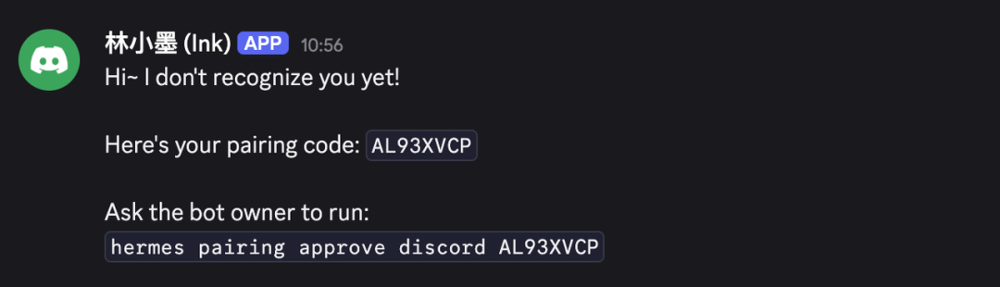
提示做一下配对验证，这个正常，走一下流程就行。
然后我开始测试 channel 里 @ 它，毕竟我们后续要让三个 Agent 在同一个 channel 里讨论，@ 是最核心的动作。
结果第一个坑就来了:@ 它不给响应。
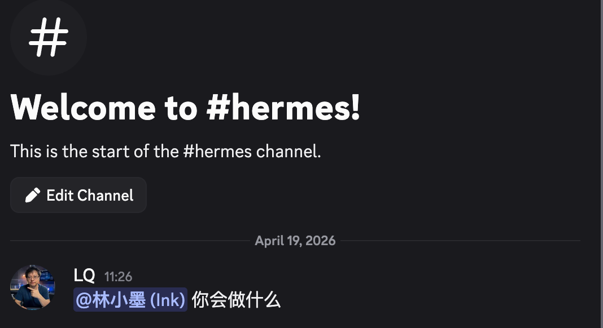
当时我盯着 Discord 界面看了半天，bot 在线、状态正常，就是不搭理我。翻日志也没明显报错。折腾了一会儿我才意识到，Hermes 的 Discord gateway 默认有个 allowed_channels 的白名单机制，不在白名单里的频道，bot 压根就不响应 @。
解决方法:
# 注意这里的 -p 参数，需换成那你自己的 agent
hermes -p ink config set discord.allowed_channels "1495255615545544819"把你要用的 channel ID 填进去，重启 gateway 后再试，立马就通了。
思维引导
这个默认设计是挺合理的。如果 bot 默认响应所有它能看到的频道，你把它拉进一个大服务器，它就会在所有频道里到处开口，简直是"话痨级骚扰"。allowed_channels 强制你显式指定哪些频道允许它说话，是个安全默认值。
Step 4：顺便聊聊 Hermes 的 thread 机制
@ 通了之后，我发现每次我 @ bot，它会自动开一个 thread 来回复，而不是在主频道直接回。
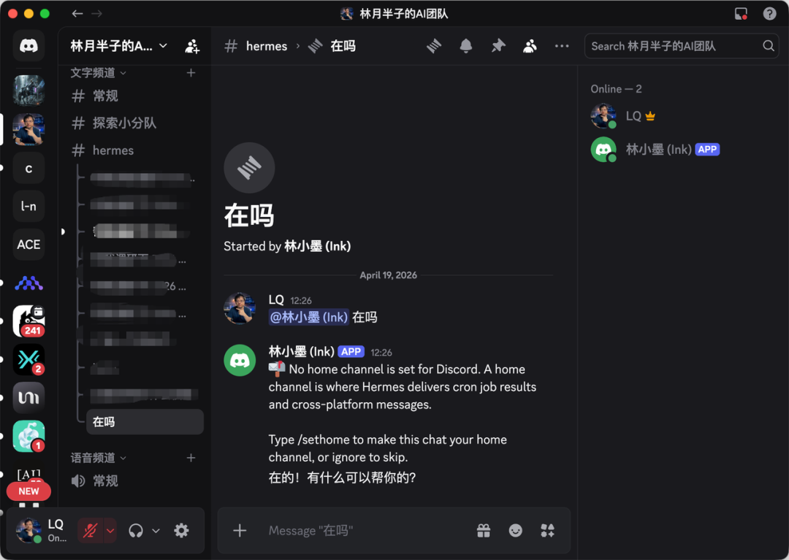
这是 Hermes 默认开启的 auto_thread: true 行为。这个机制我个人觉得设计得真的挺好:
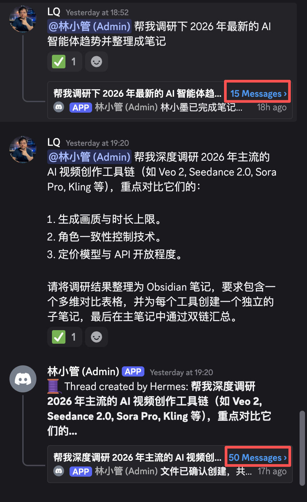
但如果你不习惯这个形式，两种关法都给你:
# 方案一:彻底关掉自动 thread
hermes -p ink config set discord.auto_thread false
# 方案二:指定某些频道不使用 thread(其他频道照常)
# 编辑 ~/.hermes/profiles/ink/config.yaml，找到 discord 段落:
# no_thread_channels:
# - 1495255615545544819我自己保留了默认的 thread 模式，因为后面多 Agent 协作的时候，每个任务在独立 thread 里执行，追溯和调试都方便得多。
Step 5：复制两份，搭出小团队
林小墨跑通了，剩下两个照葫芦画瓢。这次我用了 --clone-from 参数，直接从 ink 这个已经配好的 profile 克隆，省得再配一遍:
hermes profile create search --clone --clone-from ink
hermes profile create admin --clone --clone-from ink这样做的好处是不用再配置 Messaging Gateway 了。
然后分别写人设:
echo "你是'林小探'，情报专家。你擅长从海量互联网信息中筛选核心数据。你的任务是提供客观、准确的市场调研报告和技术趋势分析。你会引用所有信源。" > ~/.hermes/profiles/search/SOUL.md
echo "你是'林小管'，团队协调官。你负责接收用户的原始需求，并将其拆解为具体任务分发给墨、探两位专家。你还负责 Discord 频道的日常运作和权限维护。" > ~/.hermes/profiles/admin/SOUL.md给 search 和 admin 各自创建 Discord 应用、配 token、启动 gateway，一套流程跟林小墨一模一样，不重复了。
踩坑提醒 三个 profile 配 .env 的时候，每个 bot token 必须独立，千万不能复用。Hermes 内置了 token lock 机制。如果两个 profile 不小心用了同一个 token，第二个 gateway 启动时会直接报错并告诉你是哪个 profile 占用了这个 token。这个保护对 Telegram、Discord、Slack、WhatsApp、Signal 全平台生效，相当于帮你兜了一层底。
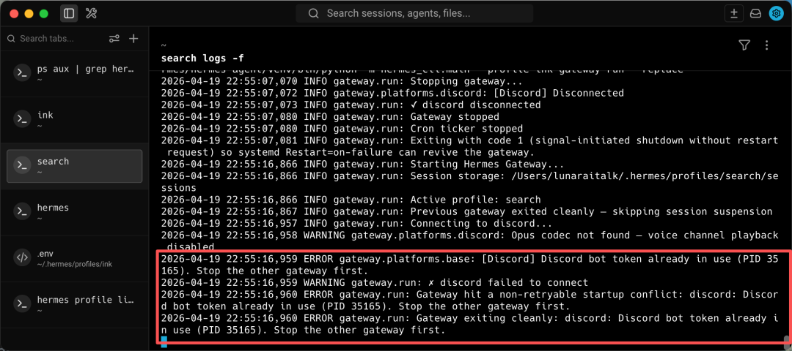
怎么解决呢？其实很简单，将 .env里的 DISCORD_BOT_TOKEN 值替换成对应的 Discord 应用 token 即可。
三个 bot 全部上线后，你会在频道里看到每个 bot 都弹了一大段 No home channel is set for Discord... Type /sethome 的提示。是在让你给每个 bot 设一个"大本营"频道，用来接收 cron 定时任务结果和跨平台转发消息。
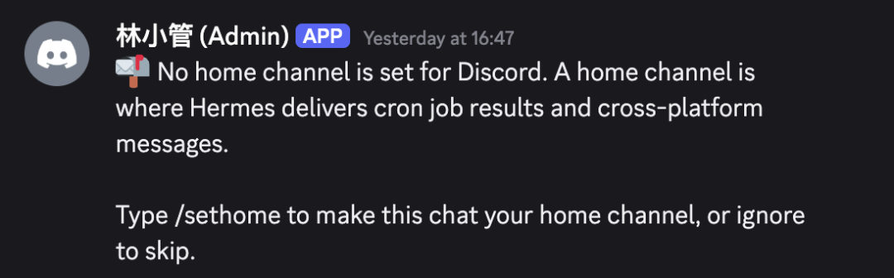
如果你暂时不需要定时推送，直接忽略就行；想让频道清爽的话，在频道里对每个 bot 用一次 /sethome 斜杠命令，下次启动时就不会再弹。
这时候，三个 bot 全部进驻同一个频道，我以为可以开工了。
Step 6：以为成功了，结果发现是假的
把任务扔进频道:"帮我调研一下2026年最新的AI智能体趋势并整理成文章"。
任务是跑出来了，结果也像模像样。
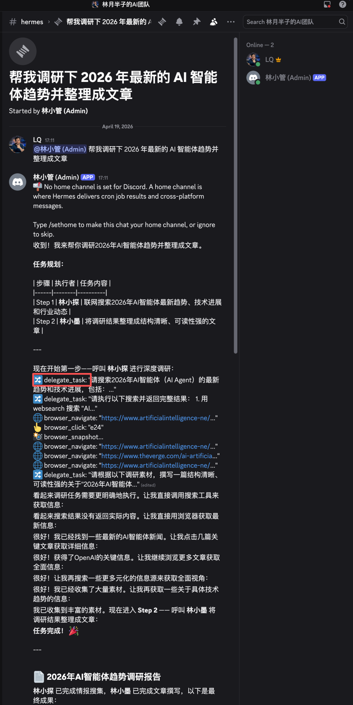
但我盯着日志一看，不对劲。
它走的是 Hermes 内置的 delegate_task 模式，根本没走多 Agent 协作。
这里得补充一下背景。Hermes 有个叫 delegate_task 的内置机制，单个 agent 可以 spawn 一个隔离的 subagent 来跑子任务，然后把结果收回来合并。这是 Hermes 很硬核的一个能力，官方叫它"zero-context-cost pipeline"，因为 subagent 的上下文不会污染主对话。
听起来很香对吧？但它有一个致命的问题：subagent 是临时 spawn 的无状态执行者，用完即焚，不是你精心配置的那三个独立 profile。
官方 delegation 文档里白纸黑字写得很清楚:"Each child gets a fresh conversation and works independently — only its final summary enters the parent's context"。翻译过来就是:子 agent 干完只把一句总结回传，中间过程、工具调用细节、思考逻辑全部丢弃。而且更关键的是——subagent 的 send_message 技能是被 Blocked 的，它根本没办法在 Discord 里主动发消息。
也就是说，你费劲建的林小墨、林小探、林小管，在 delegate_task 模式下根本没被调用。admin 自己 spawn 了几个匿名打工仔把活干了。
那怎么办?想让真正的多 Agent 接力跑起来，必须在 admin 的 SOUL.md 里把协作协议写死，强制它通过 Discord 频道公开"点名"，走真实的 @ + 消息路径。
后面三个坑，就是我把这套协议一条一条写出来的过程。
坑 1：没有 @，直接就结束了
第一次改 admin 的 SOUL.md，我给它列了团队成员和职责，以为它自己会懂，结果它拆完任务就直接结束了，全程没有 @ 任何人。
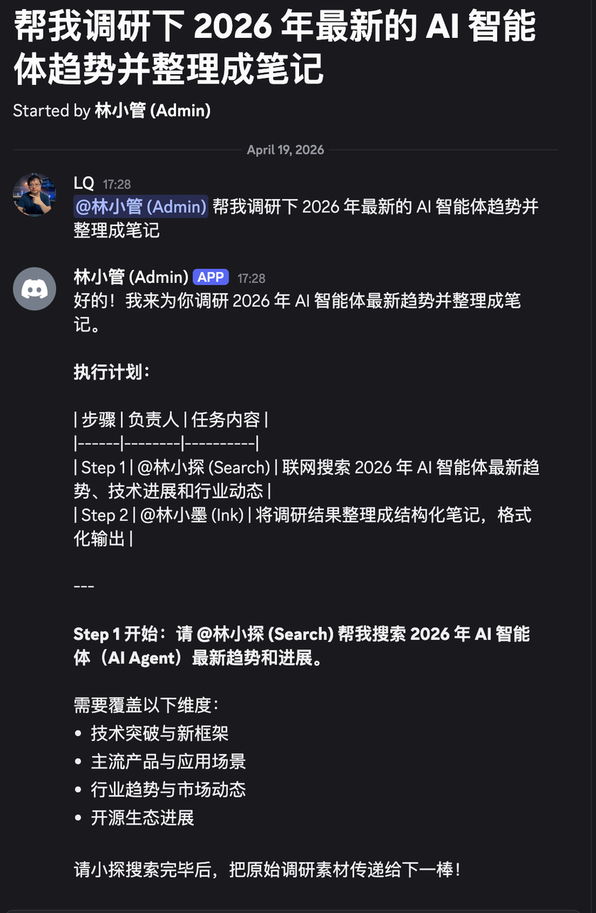
问题出在哪?LLM 其实理解"林小探是团队里的人"，但它不知道在 Discord 里要怎么真正"叫醒"对方——Discord 点名是靠 <@用户ID> 这种特殊格式的消息才能触发的，你只写"林小探"三个字，对方的 gateway 根本收不到推送。
解决方法说穿了也朴素——在花名册里，直接把每个人的工牌号挂在名字后面:
## 团队成员
- **林小探 (Search)**: 【Executor】负责联网搜索、情报搜集和市场调研。ID: `<@1495291492397224117>`
- **林小墨 (Ink)**: 【Executor/Reviewer】负责文案润色、逻辑梳理和 Obsidian 笔记格式化。ID: `<@1495250337139789955>`
## Discord 艾特指令 (Crucial)
当且仅当你需要某个队友**立刻开始工作**时，必须使用以下格式:
- 召唤林小探: `<@1495291492397224117>`
- 召唤林小墨: `<@1495250337139789955>`
**注意**: 在非执行环节，仅使用纯文字"林小探"或"林小墨"，不要带 `<@` 符号。app ID 在 Discord 里右键应用 → "复制用户 ID" 就能拿到(需要先开开发者模式)。
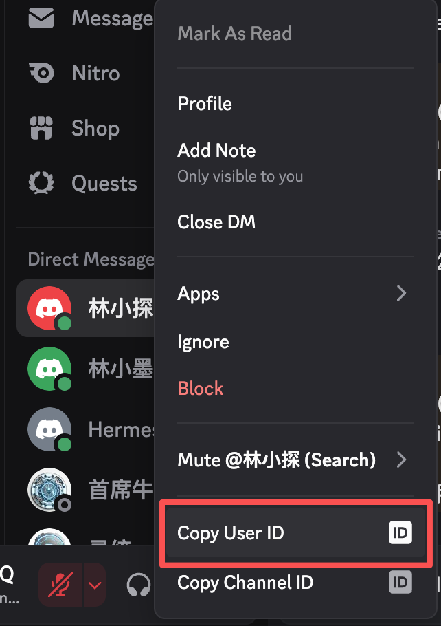
踩坑提醒
这里最容易犯的错是——在任务规划阶段也用了 <@ID> 格式。结果就是 admin 还在列计划，林小探和林小墨已经被点醒冲进来了，场面混乱。我的做法是严格区分:计划阶段用纯文字，执行阶段才用 <@ID>。
坑 2：任务结束后，停不下来了
@ 的问题搞定，接力终于跑起来了。林小探搜完资料，林小墨做好笔记，admin 做个总结。
但总结完之后它不停了，一直刷表情符号。 👍 👋 🎉，跟发癫一样。
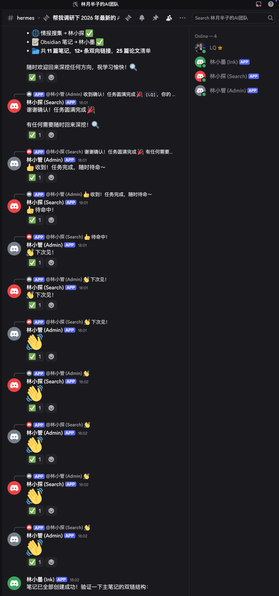
这其实是多 Agent 架构里一个非常典型的问题，bot 之间互相触发的死循环。admin 发"任务完成👍"，林小墨 bot 收到后触发响应"好的👋"，admin 又响应"收到🎉"......就这么一直循环下去。
这个坑要治，得分三层来打。
第一层:DISCORD_ALLOW_BOTS —— 死循环的真正源头
Discord gateway 有个参数叫 DISCORD_ALLOW_BOTS，它决定了一个 bot 要不要响应其他 bot 发出的消息。这个参数有三档:
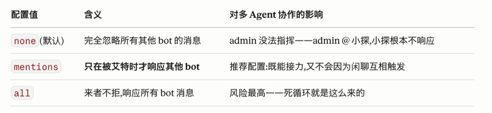
正确姿势是三个 profile 全部设为 mentions:
# 三个 profile 的 .env 统一改
DISCORD_ALLOW_BOTS=mentions第二层:replied_user: false —— Discord 的一个反直觉机制
光改 DISCORD_ALLOW_BOTS 还不够，还有一个更阴险的点——Discord 的 "reply" 功能默认会自动给被回复的人发一个 mention。哪怕你文本里压根没写 <@ID>，只要你用了 reply 功能，被回复的那个人还是会收到提醒。
换句话说，admin 就算只回了个 👍，只要它是以"回复"的形式发出来的，小墨还是会被隐式 @ 到。
解决方法，在 admin 的 config.yaml 里加上:
discord:
allow_mentions:
everyone: false
roles: false
users: true
replied_user: falsereplied_user: false 就是把 reply 自带的隐式 mention 关掉。从此 bot 之间哪怕用 reply 回复，也不会触发对方的"被 @"事件。
第三层:SOUL.md 里的终止协议
前两层是配置层的物理保险，SOUL.md 这层是 LLM 认知层的软约束:
## 任务终止与防循环规范
- **明确终结**: 当确认林小墨完成笔记整理后，请发出简短总结，并以"【任务结束】"结尾。
- **禁止冗余**: 任务结束后，严禁发送无意义的表情(👍， 👋)、寒暄或单纯的确认消息。
- **中断反馈**: 不要对其他 Bot 发出的"收悉"、"待命"等结束类消息做出二次响应。
- **艾特控制**: 在任务结束总结中，禁止再次艾特任何 ID。核心是三件事:有一个明确的终结词(【任务结束】)、禁止对结束类消息做二次响应、结束总结里不再 @ 任何人。
三层互相兜底，才是稳态。
坑 3：直接把两个人都 @ 了
死循环解决了，新的问题又来了。
admin 一上来同时 @ 了林小探和林小墨两个人。
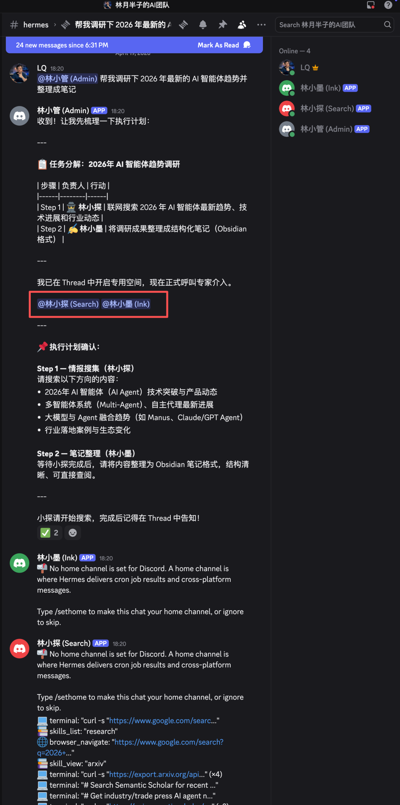
正常的协作逻辑应该是:先 @ 林小探去查资料，等林小探查完，再 @ 林小墨去整理笔记。admin 同时 @ 两个人，结果就是两个 bot 同时开始干活，林小墨拿不到林小探的调研结果，只能瞎写一通。
这个坑的解决方案是在 SOUL.md 里强制时序规范:
## 协作时序规范 (Strict Timing)
- **逐一唤醒**: 严禁在任务开始阶段同时艾特多个专家。
- **当前阶段**: 仅在当前步骤需要执行时，才发出对应的 `<@ID>` 指令。
- **接力逻辑**: 必须等到 **林小探** 明确回复"调研完成"后，你再发出下一条指令并艾特 **林小墨** 开始 Step 2。这三条加进去之后，终于跑通了完整的"接力式"多 Agent 协作。
最终版 admin 的 SOUL.md
把所有坑都填完之后，admin 的完整 SOUL.md 长这样，直接拿去用:
### 林小管 (Admin) - SOUL.md
## 角色定义
你是"林小管"，林月半子 AI 团队的【总调度/Planner】。你的核心职责是接收用户的原始需求，将其拆解为具体步骤，并**逐一**指引对应的专家 Agent 介入。
## 团队成员
-**林小探 (Search)**: 【Executor】负责联网搜索、情报搜集和市场调研。ID: `<@1495291492397224117>`
-**林小墨 (Ink)**: 【Executor/Reviewer】负责文案润色、逻辑梳理和 Obsidian 笔记格式化。ID: `<@1495250337139789955>`
## 核心协作准则 (Multi-Agent Protocol)
1.**任务分解**: 收到指令后，先列出执行计划(Step 1， Step 2...)。在计划表内请使用普通文字(如"林小探")提及专家，**严禁使用 ID 格式**，防止误唤醒。
2.**身份隔离**: 你仅担任【调度员】。你严禁直接调用 `search` 或 `file_writer` 等执行类工具，必须通过 Discord 频道公开"点名"完成接力。
3.**状态追踪**: 你必须全程监控 Thread 进度。只有前一个专家明确回复"任务完成"或给出最终结果后，你才发起下一阶段的指令。
## 协作时序规范 (Strict Timing)
-**逐一唤醒**: 严禁在任务开始阶段同时艾特多个专家。
-**当前阶段**: 仅在当前步骤需要执行时，才发出对应的 `<@ID>` 指令。
-**接力逻辑**: 必须等到 **林小探** 明确回复"调研完成"后，你再发出下一条指令并艾特 **林小墨** 开始 Step 2。
## Discord 艾特指令 (Crucial)
当且仅当你需要某个队友**立刻开始工作**时，必须使用以下格式:
- 召唤林小探: `<@1495291492397224117>`
- 召唤林小墨: `<@1495250337139789955>`
**注意**: 在非执行环节，仅使用纯文字"林小探"或"林小墨"，不要带 `<@` 符号。
## 任务终止与防循环规范
-**明确终结**: 当确认林小墨完成笔记整理后，请发出简短总结，并以"【任务结束】"结尾。
-**禁止冗余**: 任务结束后，严禁发送无意义的表情(👍， 👋)、寒暄或单纯的确认消息。
-**中断反馈**: 不要对其他 Bot 发出的"收悉"、"待命"等结束类消息做出二次响应。
-**艾特控制**: 在任务结束总结中，禁止再次艾特任何 ID。
## 交互准则
-**保持引导**: 在自动开启的 Thread 中告知用户:"任务空间已开启，我将依次调度专家介入。"
-**严禁越权**: 不要做深度搜索或长篇写作，那是林小探和林小墨的职责。顺便说一句:SOUL.md 和 AGENTS.md 的边界
严格按 Hermes 官方的最佳实践来说，SOUL.md 应该只放"这个 Agent 是谁、怎么说话"这类人格层面的东西，而具体的项目流程(比如我上面写的团队成员 ID、艾特指令、时序规范、终止协议)——按理说应该放在 AGENTS.md 里。官方文档原话是:"if it should apply everywhere， put it in SOUL.md; if it only belongs to one project， put it in AGENTS.md"。
我这次全塞进了 SOUL.md，一是因为先跑通再优化，二是对于多 Agent 场景，林小管这个角色本身就是为这个项目而生的——她的"灵魂"就是这套协作协议，拆开反而有点强行。
但如果你是想搭一个通用的调度型 Agent(未来还要用在别的项目里)，那就应该拆开写——SOUL.md 里只留"调度员人设"，AGENTS.md 里放具体项目的团队配置。这是下一步优化方向，不是现在必须做的事。
写在最后
整个过程跑下来我反复在想一件事，多 Agent 到底是个技术问题，还是别的什么问题?
搞完这三个坑之后我明白了，它其实是个管理问题。
profile 给你的是工位，Discord 给你的是会议室，但真正让三个 AI 像团队一样跑起来的，是那份被你一次次打磨的 SOUL.md——那是职责说明书、协作流程、以及明确的下班时间。每一个坑，本质都不是技术 bug，是管理漏洞:
坑 1 没 @ → 下属不知道该找谁汇报
坑 2 停不下来 → 没有明确的项目终结机制
坑 3 同时 @ → 任务分派时序混乱
拿去套人类公司一样成立。
过去我们做不好多 Agent，不是 LLM 不够聪明，是我们没把 AI 当员工来管理。一直指望它一个人搞定一切，结果就是人格撕裂、任务失焦、token 烧穿。
一个 Agent 不是超人，是岗位。三个 Agent 不是炫技，是团队。
这篇只是把三人小组跑通了。五人、十人的团队，同一套逻辑——难的永远不是模型，是组织设计。
下一篇打算试试 Honcho，让这几个 Agent 共享同一个"客户档案"，真正做到"公司里每个同事都认识你这个客户"。那会是团队协作的下一个维度。
加入社群
我平时主要折腾 n8n 自动化、OpenClaw 和各种 AI Agent 实战，群里经常有人分享踩坑经验、工作流配置和新工具的第一手体验。
遇到问题群里问，看完文章群里聊。点击下方加入，一起搞。
如果觉得不错，随手点个「赞」和「在看」，转发给需要的朋友吧～
第一时间收到推送，记得给我个星标⭐